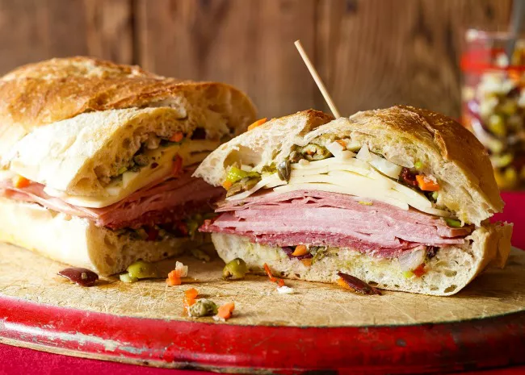

Description
A muffuletta is both a type of sandwich invented by Italian immigrants in
New Orleans and the type of bread it's served on. A muffuletta consists of
a halved muffuletta loaf with deli meats (usually salami, ham, and
mortadella) and olive spread. The large sandwich is cut into quarters, so
one loaf of bread produces at least four servings.
Ingredients
Olive Salad:
- 1 cup pimento-stuffed green olives, crushed
- ½ cup drained kalamata olives, crushed
- ½ cup pepperoncini, drained
- ¼ cup roughly chopped pickled cauliflower florets
- ¼ cup marinated cocktail onions
- 2 cloves garlic, minced
- 2 tablespoons drained capers
- 1 tablespoon chopped celery
- 1 tablespoon chopped carrot
- 1 teaspoon dried oregano
- 1 teaspoon dried basil
- ¾ teaspoon ground black pepper
- ½ teaspoon celery seed
- ½ cup olive oil
- ¼ cup canola oil
- ¼ cup red wine vinegar
Sandwiches:
- 2 (1 pound) loaves Italian bread
- 8 ounces thinly sliced Genoa salami
- 8 ounces thinly sliced cooked ham
- 8 ounces sliced mortadella
- 8 ounces sliced mozzarella cheese
- 8 ounces sliced provolone cheese
Directions
-
To make the olive salad: Roughly chop together green olives, Kalamata
olives, pepperoncini, cauliflower, cocktail onions, garlic, capers,
celery, and carrot.
-
Combine with oregano, basil, black pepper, and celery seed in a medium
bowl. Add in olive oil, canola oil, and vinegar. Mix together and
transfer the mixture into a glass jar (or other nonreactive container).
Pour in more oil to cover if needed.
-
Cover jar or container and refrigerate at least 8 hours to overnight.
-
To make the sandwiches: Cut loaves of bread in half horizontally; hollow
out some of the excess bread to make room for filling.
-
Spread each piece of bread with equal amounts of the olive salad,
including oil.
-
Layer bottom half of each loaf with 1/2 of the salami, ham, mortadella,
mozzarella, and Provolone slices.
-
Replace top half on each loaf and cut the sandwiches into quarters.
-
Serve immediately, or wrap tightly and refrigerate for a few hours; this
will allow for the flavors to mingle and the olive salad to soak into
the bread.